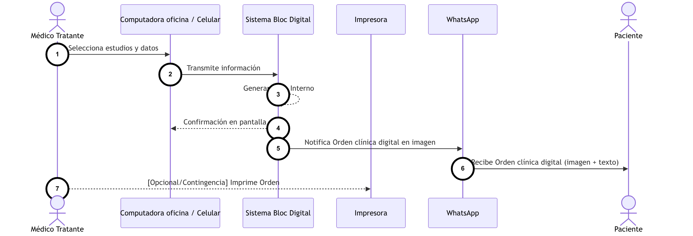
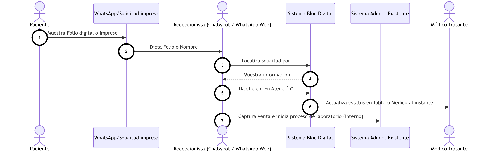
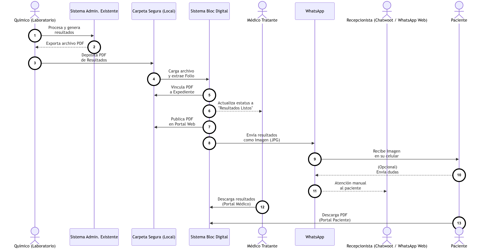
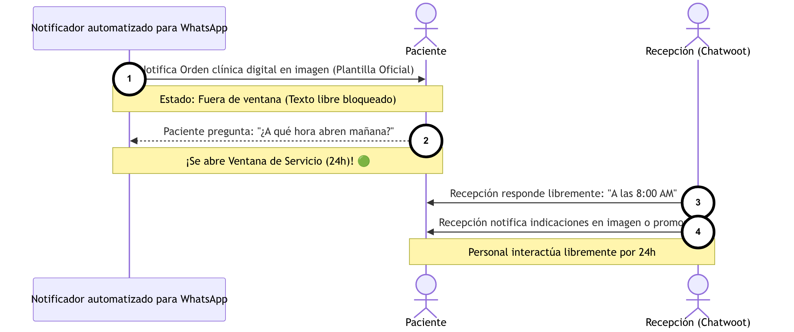
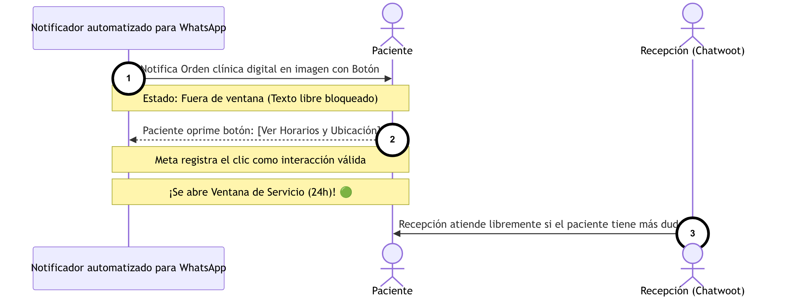
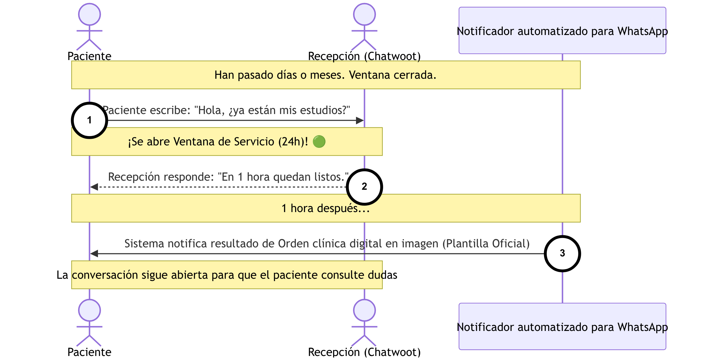

Contexto: Este diagrama expresa el flujo inicial de captación. Ilustra cómo el Médico Tratante emite la orden de estudios desde su PC o celular, cómo el Sistema Bloc Digital la procesa en la nube generando un Folio único, y cómo notifica al Paciente su Orden clínica digital en imagen vía WhatsApp API Cloud, atrayéndolo hacia el laboratorio.
|
📖 Instrucciones de Lectura • El diagrama se lee cronológicamente de arriba hacia abajo, siguiendo los pasos numerados (1, 2, 3...). • Las líneas sólidas representan envíos de información. • Las líneas punteadas representan confirmaciones del sistema. |
💎 Puntos de Valor del Flujo • Menos Errores: Mitiga la mala letra en recetas de papel. El Médico Tratante captura los datos directamente en el sistema. • Atracción: El Paciente recibe una solicitud formal con la marca del laboratorio en su celular antes de asistir. • Trazabilidad Total: Genera un Folio único desde el primer instante, vinculando al Médico Tratante, al Paciente y al estudio. |

Contexto: Este diagrama muestra la llegada del Paciente a la clínica y la interacción en mostrador. La Recepcionista localiza la orden pre-cargada por el Médico Tratante en el Sistema Bloc Digital (vía portal interno o Chatwoot), agilizando la toma de muestras y el cobro sin volver a transcribir datos.
|
📖 Instrucciones de Lectura • Siga la numeración del 1 al 4, de arriba hacia abajo. • Identifique al Paciente entregando su Folio digital y a la Recepcionista validándolo en el sistema. • Observe cómo Recepción hace el puente de datos hacia el área de Toma de Muestras. |
💎 Puntos de Valor del Flujo • Velocidad en Mostrador: Evita volver a teclear todos los estudios del Paciente; todo viene pre-cargado por el Médico Tratante. • Fluidez Operativa: Transición transparente hacia el software de caja/LIS existente del laboratorio. • Visibilidad al Médico Tratante: El sistema registra el momento en que el Paciente llegó a la clínica. |

Contexto: El Químico deposita el PDF en una carpeta segura; el Sistema Bloc Digital lo detecta, vincula al expediente por el Folio, lo convierte a imagen y notifica al Paciente vía WhatsApp API Cloud. La Recepcionista atiende dudas en tiempo real desde Chatwoot sin tocar el proceso. El WhatsApp Stopper monitorea el consumo en cada envío.
|
📖 Instrucciones de Lectura • Siga los pasos numerados de arriba hacia abajo. • Note cómo el Sistema Bloc Digital funge como orquestador central (pasos 4, 5, 6 y 7). • Observe al actor "Recepcionista (Chatwoot)" atendiendo respuestas sin interrumpir el flujo automatizado. |
💎 Puntos de Valor del Flujo • Automatización Total: La Recepcionista ya no adjunta PDFs ni envía mensajes; el sistema lo hace en segundos. • Modelo Híbrido: El Paciente responde al mismo chat y la Recepcionista le atiende en Chatwoot, manteniendo la calidez humana. • Accesibilidad Remota: Portal histórico de resultados disponible 24/7 vía HTTPS. |
Los siguientes diagramas ilustran cómo operan las políticas Anti-Spam de Meta (Regla de la Ventana de Servicio de 24 horas). El Notificador Automatizado (Sistema Bloc Digital) puede enviar plantillas aprobadas por Meta en cualquier momento. Sin embargo, la Recepcionista (en Chatwoot) solo puede responder con texto libre si el Paciente realiza una interacción previa que "abre" la ventana. Esta limitante aplica únicamente al canal WhatsApp API Cloud; el número tradicional de la clínica no está afectado.

Contexto: Este diagrama ilustra el caso ideal: el Paciente, al tener una duda tras recibir su notificación por WhatsApp API Cloud, escribe un mensaje de texto al mismo chat. Este mensaje iniciado por el usuario abre automáticamente la Ventana de Servicio de 24 horas, permitiendo a la Recepcionista atenderle libremente desde Chatwoot.
|
📖 Instrucciones de Lectura • Siga la cronología de arriba hacia abajo (pasos 1 a 4). • La nota verde (🟢) indica el momento exacto en que las políticas de Meta permiten el texto libre. • Observe que la Recepcionista puede enviar audios, imágenes y texto libre solo después de esa apertura. |
💎 Puntos de Valor del Flujo • Continuidad de Atención: El Paciente recibe ayuda humana cuando la necesita, sin percibir un sistema automatizado cerrado. • Ventana de 24 h: La Recepcionista puede resolver cualquier incidencia en texto libre sin costo adicional de Meta durante ese lapso. |

Contexto: Este diagrama muestra la táctica de mitigación por botón interactivo. El Notificador Automatizado incluye en la plantilla un botón de acción (ej. [Ver Horarios y Requisitos]). Si el Paciente lo selecciona, Meta lo registra como interacción equivalente a un mensaje, abriendo la Ventana de Servicio de 24 horas para que la Recepcionista atienda desde Chatwoot.
|
📖 Instrucciones de Lectura • Identifique el primer envío (1): la plantilla que contiene el botón interactivo. • Vea el paso (2): la simple acción de oprimir el botón detona la nota verde (🟢). • El paso (3) habilita la atención humana libre desde Chatwoot. |
💎 Puntos de Valor del Flujo • Apertura de Ventana: La selección del botón por parte del Paciente habilita la atención humana en texto libre sin requerir que redacte un mensaje. • Protección contra bloqueos: Evita que la Recepcionista intente enviar texto libre sin la ventana activa y sea penalizada por las políticas anti-spam de Meta. |

Contexto: Este flujo refleja un caso asíncrono: el Paciente, días o meses después de haber asistido (con la ventana ya cerrada), escribe por iniciativa propia para reclamar sus resultados o hacer una consulta. Este mensaje "Inbound" reabre automáticamente la Ventana de Servicio de 24 horas, permitiendo a la Recepcionista atenderle desde Chatwoot. El Notificador Automatizado puede seguir enviando plantillas de forma independiente.
|
📖 Instrucciones de Lectura • Observe el paso (1): el Paciente inicia contacto tras días o meses de inactividad en el chat. • Esto reabre inmediatamente la ventana (🟢) para que la Recepcionista opere libremente desde Chatwoot. • Note que el Notificador Automatizado (paso 3) envía la plantilla oficial de forma independiente al estado de la ventana. |
💎 Puntos de Valor del Flujo • Flexibilidad Asíncrona: El Paciente siempre tiene la línea disponible para iniciar contacto, sin importar cuánto tiempo haya pasado. • Sin Fricción: Las respuestas de la Recepcionista (2) se intercalan perfectamente con las notificaciones automáticas del Sistema (3), manteniendo un hilo de conversación coherente en Chatwoot. |